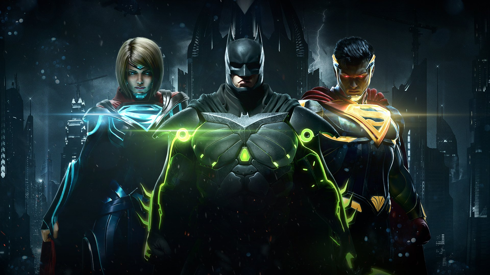

INJUSTICE 2
Injustice 2 is a 2017 fighting video game based upon the DC Universe. It is developed by NetherRealm Studios and published by Warner Bros. Interactive Entertainment. It is the sequel to 2013's Injustice: Gods Among Us. The game was initially released in May 2017 for the PlayStation 4 and Xbox One; a Microsoft Windows version was released later in November 2017. An expanded version of the game, titled Injustice 2: Legendary Edition, was released in March 2018 for the PlayStation 4, Xbox One, and Microsoft Windows. Similar to the previous installment, a companion mobile app was released for Android and iOS devices. A prequel comic book series of the same name, written by Tom Taylor, was also released beginning in April 2017.
The core gameplay remains similar to its predecessor, albeit with minor adjustments to returning game mechanics. Injustice 2 introduces a new feature called the Gear System, a loot-dropping system that rewards players with costume pieces and equipment that can be used to customize characters' appearances and modify their abilities and stats. According to developers, the idea for implementing a role playing game (RPG)-style progression system into a fighting game had existed since before the fall of Midway Games, the original publisher for the Mortal Kombat series. Director Ed Boon also sought to incorporate gameplay mechanics used by multiplayer shooter games, such as personalization, character creation, loot, and leveling up, into the fighting game genre, which led to the development of the Gear System.
The core gameplay remains similar to its predecessor, albeit with minor adjustments to returning game mechanics. Injustice 2 introduces a new feature called the Gear System, a loot-dropping system that rewards players with costume pieces and equipment that can be used to customize characters' appearances and modify their abilities and stats. According to developers, the idea for implementing a role playing game (RPG)-style progression system into a fighting game had existed since before the fall of Midway Games, the original publisher for the Mortal Kombat series. Director Ed Boon also sought to incorporate gameplay mechanics used by multiplayer shooter games, such as personalization, character creation, loot, and leveling up, into the fighting game genre, which led to the development of the Gear System.
Gameplay
Injustice 2 is a fighting game in which players compete in one-on-one combat using characters from the DC Universe and other third-party franchises. Using different combinations of directional inputs and button presses, players must perform basic attacks, special moves, and combos to try to damage and knock out the opposing fighter. Injustice 2 retains numerous gameplay mechanics from Injustice: Gods Among Us, including environment interaction, stage transitions, clashes, and character traits.
The trait system, like before, provides a temporary buff or ability that complements each character's playstyle. The super meter, which allows players to execute enhanced special moves and unlock powerful "super moves" when fully charged, also returns. Players can expend meter to perform new techniques, such as an evasive forward roll, which provides a way to overcome enemy keep-away tactics, or an air recovery, which lets characters escape an opponent's combo early. Most environmental attacks, which were completely unavoidable in the first Injustice game, can now be blocked or dodged; however, certain environmental attacks with large amounts of startup, such as throwing a car, remain unblockable.
The trait system, like before, provides a temporary buff or ability that complements each character's playstyle. The super meter, which allows players to execute enhanced special moves and unlock powerful "super moves" when fully charged, also returns. Players can expend meter to perform new techniques, such as an evasive forward roll, which provides a way to overcome enemy keep-away tactics, or an air recovery, which lets characters escape an opponent's combo early. Most environmental attacks, which were completely unavoidable in the first Injustice game, can now be blocked or dodged; however, certain environmental attacks with large amounts of startup, such as throwing a car, remain unblockable.

SYNOPSIS
The game begins with Kara Zor-El's and an infant Kal-El's escape from Krypton during Brainiac's attack on the planet. Aided by Kara's mother, they manage to escape aboard pods headed to Earth, but Kara's ship is knocked off course. Years later, prior to the events of the first game, Batman and his son Robin attempt to stop Superman's Regime from executing Arkham Asylum inmates. Failing to dissuade Superman, Batman fights him, but is attacked by Robin, who prefers Superman's methods. Batman defeats Robin, but he leaves with Superman to join the Regime, after executing Victor Zsasz.
In the present, five years after the Regime's fall, Batman and his Insurgency are attempting to rebuild society. They learn of a new faction, the Society, composed of villains spearheaded by Gorilla Grodd, who seeks global domination. Black Canary, a parallel universe version of Green Arrow, and a reformed Harley Quinn, are tasked by Batman with stopping the Society, and track them down to Slaughter Swamp, where they form an alliance with Swamp Thing, despite the villains' escape. The group follows them to Gorilla City, where Doctor Fate warns them of an incoming threat. Black Canary and Green Arrow are abducted by Brainiac, the mastermind behind the Society, who intends to add Earth to his collection of shrunken planets. After Brainiac takes over Batman's communications hub, Brother Eye, Batman searches for allies to defeat him.
While Catwoman, a double agent for Batman in the Society, rescues Harley, a reformed Flash breaks his parole to help Batman, and fights Society members in New Metropolis. Meanwhile, Green Lantern, also reformed, is sent to Atlantis to recruit Aquaman, who agrees to help when Brainiac attacks Atlantis. Black Adam, Wonder Woman, and Kara (who was rescued by Adam years prior and adopted the Supergirl alias) break Superman, Nightwing, and Cyborg out of prison in an attempt to restore the Regime. They defeat Blue Beetle and Firestorm before Batman arrives and forms a reluctant alliance with the Regime members to stop Brainiac.
In the present, five years after the Regime's fall, Batman and his Insurgency are attempting to rebuild society. They learn of a new faction, the Society, composed of villains spearheaded by Gorilla Grodd, who seeks global domination. Black Canary, a parallel universe version of Green Arrow, and a reformed Harley Quinn, are tasked by Batman with stopping the Society, and track them down to Slaughter Swamp, where they form an alliance with Swamp Thing, despite the villains' escape. The group follows them to Gorilla City, where Doctor Fate warns them of an incoming threat. Black Canary and Green Arrow are abducted by Brainiac, the mastermind behind the Society, who intends to add Earth to his collection of shrunken planets. After Brainiac takes over Batman's communications hub, Brother Eye, Batman searches for allies to defeat him.
While Catwoman, a double agent for Batman in the Society, rescues Harley, a reformed Flash breaks his parole to help Batman, and fights Society members in New Metropolis. Meanwhile, Green Lantern, also reformed, is sent to Atlantis to recruit Aquaman, who agrees to help when Brainiac attacks Atlantis. Black Adam, Wonder Woman, and Kara (who was rescued by Adam years prior and adopted the Supergirl alias) break Superman, Nightwing, and Cyborg out of prison in an attempt to restore the Regime. They defeat Blue Beetle and Firestorm before Batman arrives and forms a reluctant alliance with the Regime members to stop Brainiac.
Development
Injustice 2 was announced by NetherRealm Studios and Warner Bros. Interactive Entertainment on June 8, 2016. Following the release of Injustice: Gods Among Us, NetherRealm Studios sought to do "something unexpected and long-term" for its sequel, as well as give players "a level of control that makes playing [their] games a truly personal experience." Ed Boon also wanted to infuse various gameplay mechanics used by recent multiplayer shooter games, such as personalization, character creation, loot, and leveling up, into the fighting game genre.
According to producer Adam Urbano, the idea of creating a fighting game utilizing a role playing game-like progression system had been floating around the studio since before the fall of Midway Games, the original publisher for the Mortal Kombat series. Due to the success of the original Injustice, which earned NetherRealm Studios the trust of Warner Bros. and DC Comics, the development team decided to pitch their progression concept for the sequel, which was approved, leading to the implementation of the Gear System.
According to producer Adam Urbano, the idea of creating a fighting game utilizing a role playing game-like progression system had been floating around the studio since before the fall of Midway Games, the original publisher for the Mortal Kombat series. Due to the success of the original Injustice, which earned NetherRealm Studios the trust of Warner Bros. and DC Comics, the development team decided to pitch their progression concept for the sequel, which was approved, leading to the implementation of the Gear System.
Gameplay Trailer